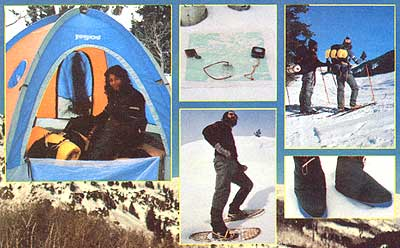

CLOCKWISE FROM FAR LEFT: Jansport's roomy Mountain Dome tent ($225) sets up easily, provides excellent all-weather protection . . . While you're out shopping, don't for get to pick up a thermometer, compass, altimeter (optional), and map . . . Two skiers toting North Face packs ($80) prepare to glide through Rabbit Ear's Pass, Steamboat Springs, Colorado . . . Some nifty North Face down booties ($21) . . . Maine Tubb bearpaw snowshoes ($65